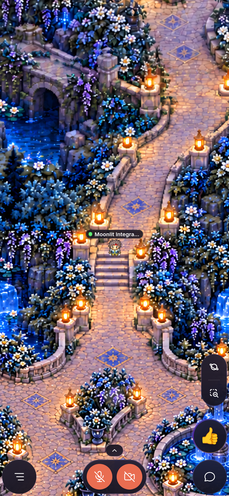
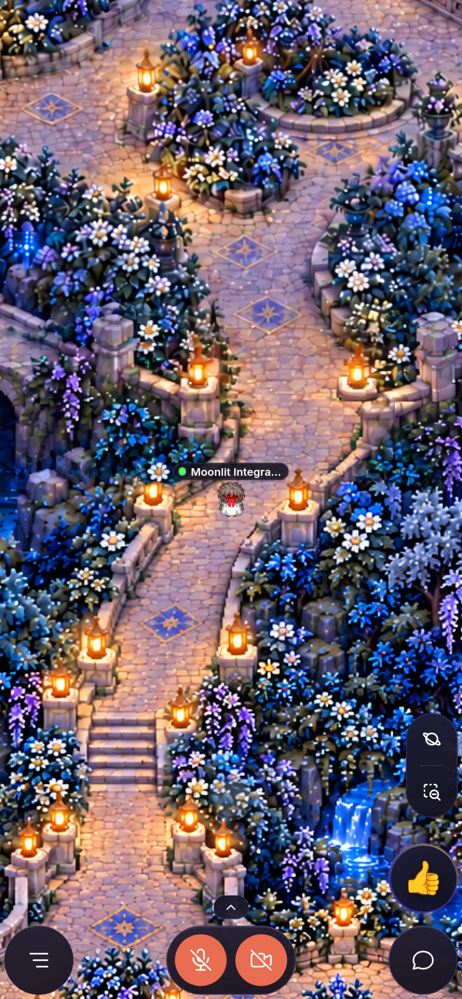
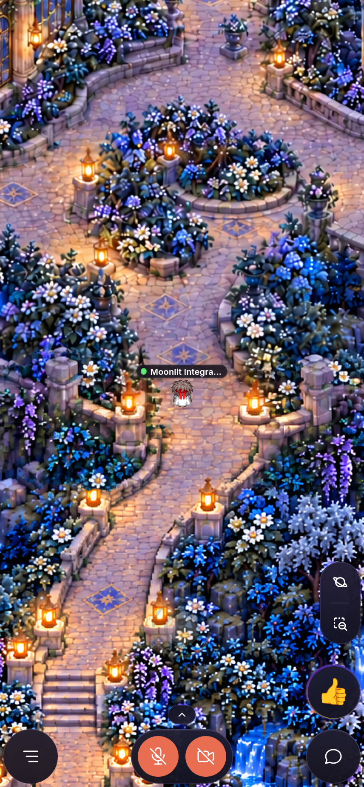
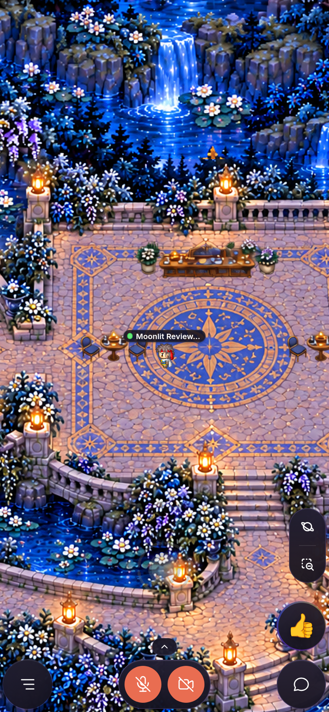
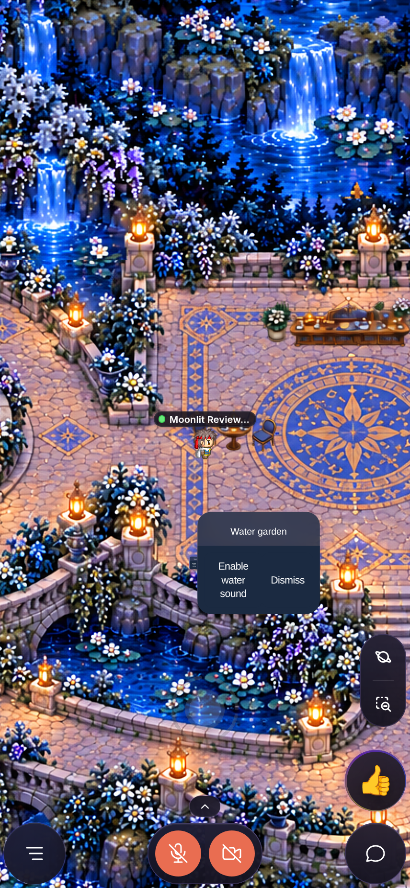
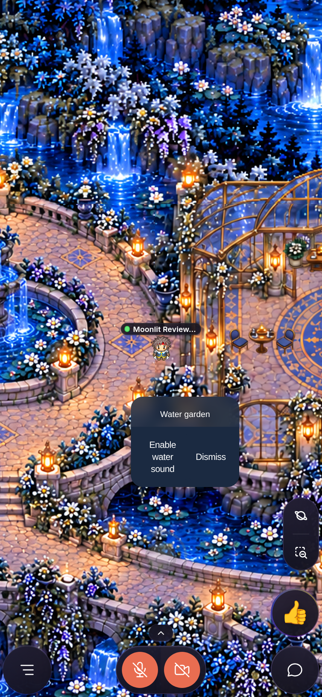
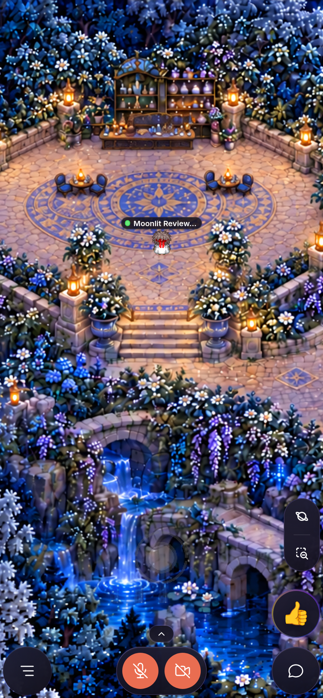
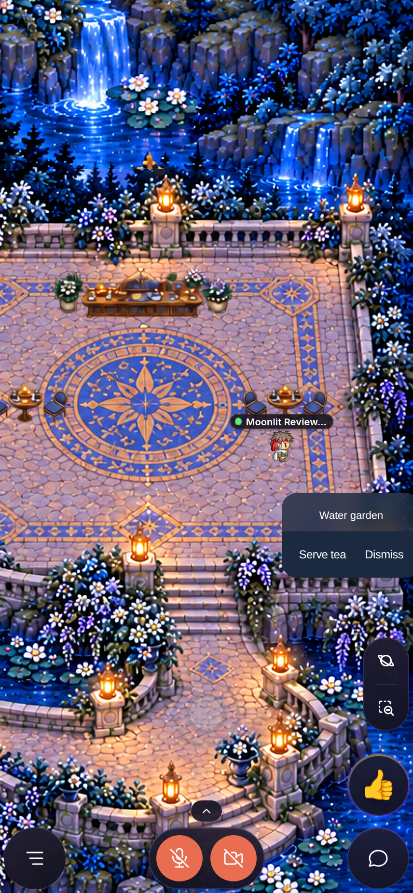
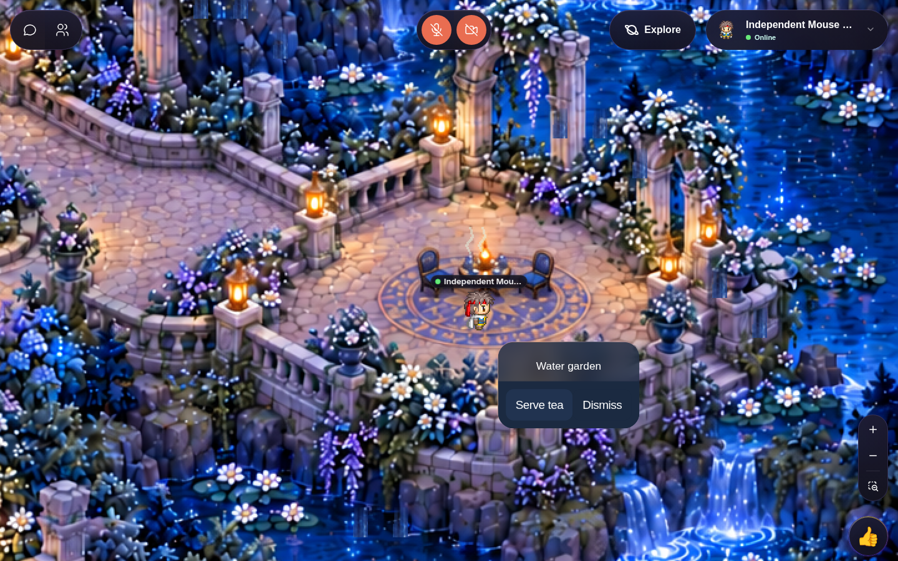

1536 × 2048. Local gameplay screenshots; independently reviewed final connector and corrected furniture. Physical-device, multiplayer and public-gameplay validation are not implied.








